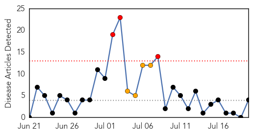

Bubonic Plague
30-Day Web Trend
4 alerts, 0 warnings

30-Day Twitter Trend
0 alerts, 0 warnings

Article Locations

Article Confidences

Top Articles:
Top Tweets:
-
No tweets found for Jul 20, 2015
Measles
30-Day Web Trend
3 alerts, 4 warnings

30-Day Twitter Trend
0 alerts, 0 warnings

Article Locations
Article Confidences
Top Articles:
- 0.981
- Ministry of Health Weekly Epidemiological Bulletin week 27 of 2015 (28th June - 4th July 2015) - Uganda
- 0.933
- Vaccines Fast Facts
- 0.913
- Measles alert: Queensland Health issue warning for passengers on Jetstar Bali to Brisbane flight
- 0.629
- Merck : Pennsylvania Department of Health's Physician General and Merck Officials Discuss Childhood Immunization Rates
Top Tweets:
-
No tweets found for Jul 20, 2015